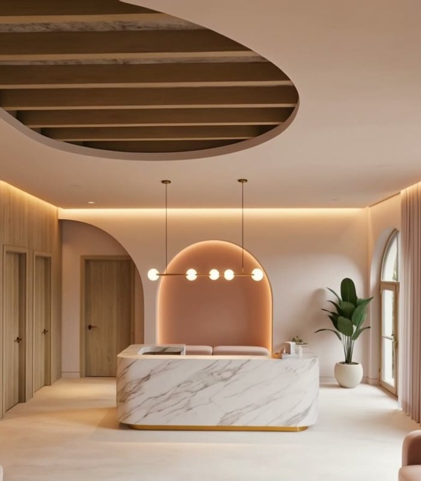

Silêncio
Salas tratadas acusticamente. O som, aqui, é só a sua respiração.
Estúdio de massagem & repouso
Um santuário onde a luz é quente, o toque é preciso
e o tempo, enfim, desacelera.
A Casa
O Sereno nasceu de uma ideia simples: criar um lugar onde o corpo possa, enfim, baixar a guarda. Cada detalhe, a luz âmbar, o aroma discreto, a temperatura da sala, o tempo que ninguém apressa, tudo existe para conduzir você de volta ao descanso.
Salas tratadas acusticamente. O som, aqui, é só a sua respiração.
Terapeutas formados, mãos que leem o seu corpo e ajustam a cada sessão.
Sessões sem relógio à vista. Você sai quando o corpo decide.
I · O que fica
Você nem repara. Ele carrega assim mesmo.
Nada disso sai num fim de semana. Sai com método.
II · O Método
Toda sessão segue o mesmo caminho, do estado de alerta ao descanso de verdade. Não é acaso nem inspiração do dia. É o que devolve você inteiro no fim.
Antes do toque, o corpo precisa chegar. Escalda-pés, aroma e silêncio baixam a guarda e tiram você do piloto automático.
Mãos que leem tensão por tensão. A pressão se ajusta ao que o seu corpo responde, nó por nó, sem pressa e sem receita pronta.
O trabalho termina, o descanso não. Alguns minutos só seus para o efeito assentar, antes de você voltar ao mundo.
Se for pra vir uma vez só, que seja esta.
Valores ilustrativos. Cortesia de boas-vindas na primeira visita, combinada no agendamento.
IV · A Experiência
Uma sessão, minuto a minuto.
Um chá morno, a luz baixa e tempo para o corpo entender que pode parar.
Você escolhe o óleo essencial que vai assinar a sessão de hoje.
As mãos encontram o ritmo do seu corpo e seguem por ele.
O trabalho para. Uns minutos em silêncio, só seus, antes de o mundo voltar.

Água, um doce e nenhuma pressa para ir embora.
V · As mãos
Nunca é qualquer um, nunca é por acaso. Cada sessão é conduzida por terapeutas formados, e a ficha de saúde é lida antes do primeiro toque.
Mãos firmes para os nós que resistem. O Toque Profundo é com ela.
Especialista em desligar o pensamento antes do corpo.
Ritmo preciso, toque leve, resultado que se sente no mesmo dia.
Conduz a sessão como quem conta uma história devagar.
Perfis ilustrativos, a equipe real entra aqui antes de publicar.
VI · Vozes
“Saí sem saber que dia era. Precisei olhar o celular pra lembrar. Faz meses que meu corpo não desligava assim, e por duas horas o mundo inteiro pôde esperar.”
“A primeira vez em meses que a minha cabeça ficou em silêncio.”
“Marquei para experimentar. Virei assinante na mesma semana.”
4,9 no Google +1.200 sessões realizadas
Depoimentos e números ilustrativos, trocar pela avaliação real antes de publicar.
VII · Planos
Corpo cuidado com constância dorme melhor, rende melhor e adoece menos. Escolha o ritmo que cabe na sua vida.
para conhecer a casa
a partir de R$ 240
para virar hábito
R$ 760/mês
R$ 190 por sessão · avulso sai R$ 240
Cancele quando quiser.
cuidado como ritual
sob consulta
Política de mensalidade e cancelamento ilustrativas, confirmar antes de publicar.
Você chega, toma um chá e conversa rápido com a terapeuta sobre o que o corpo está pedindo. O resto é deitar e deixar acontecer, a gente conduz tudo.
O que estiver confortável para chegar. Na sala, você fica coberto por um lençol o tempo todo; só a área trabalhada fica exposta, uma de cada vez.
Lençol e toalha trocados a cada sessão, sala higienizada entre um atendimento e outro. Óleos lacrados, abertos na sua frente.
Alguns casos pedem cuidado: gravidez, lesão recente, pressão alta, pós-operatório. Conte na ficha e a gente adapta a sessão, ou orienta a esperar. Sua segurança vem antes do toque.
Sem drama. Avise com antecedência e a gente remarca sem custo. O prazo exato a gente combina no agendamento.
Pix, cartão ou dinheiro. O plano mensal é cobrado uma vez por mês, sem surpresa na fatura.
Faz parte, e está tudo bem. Você diz quanto quer de conversa, de pressão e de silêncio. A sessão é sua, do seu jeito. Muita gente chega assim e sai leve.
Respostas ilustrativas, confirmar protocolos, prazos e formas de pagamento antes de publicar.
IX · Visite
Conte o que você procura e o melhor dia. A gente confirma pelo WhatsApp em minutos, sem formulário sem fim.